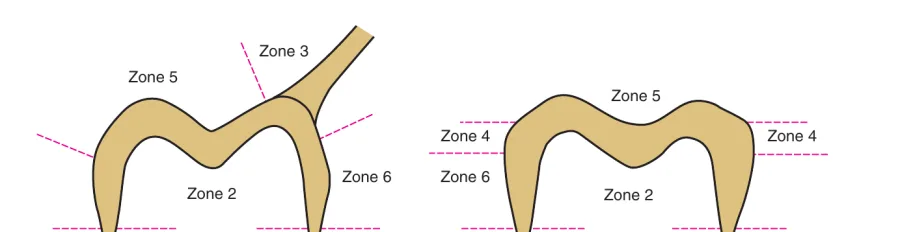

نسخه استخراجشده؛ ترجمه یا تأیید علمی انجام نشده است. وضعیت: captured
نقطهی شروع: «یک ترمیم فلزی صرفاً به این دلیل که از اینوستمنتش جدا شده، آمادهی ارزیابی و سمانگذاری نیست». سطح پالیشنشده نسبتاً زبر است و سطوح صیقلی، «تجمع و احتباس پلاک را محدود میکنند».
قاعدهی ترتیب (شکل ۲۸٫۱): «همهی مراحل یک زون باید پیش از شروع زون بعدی کامل شود.» و ترتیب: زون ۱ لبهی داخلی، زون ۲ سطح داخلی، زون ۳ اسپرو، زون ۴ تماسهای پروگزیمال، زون ۵ سطح اکلوزال، زون ۶ دیوارههای محوری، زون ۷ لبههای خارجی.
زون ۱ — لبهی داخلی: برای کمینهکردن انحلال عامل چسباننده، «نواری از فلز به عرض ۱ میلیمتر بلافاصله مجاور لبه باید کاملاً با سطح دندان تطابق یابد»؛ ناهمخوانی در همین زون «میتواند طول عمر ترمیم را بهطور معنادار کاهش دهد». تطابق خوب از ریفلو کردن دقیق الگوی مومی به دست میآید. اگر نقصی در ناحیهی لبهای رخ دهد، ترمیم باید دوباره ساخته شود.
زون ۲ — سطح داخلی (اینتاگلیو): هدف، نبود هرگونه تماس میان دای و سطح داخلی است؛ «فضای یکنواخت ۲۵ تا ۴۰ میکرومتر برای پخش یکنواخت عامل چسباننده لازم است». و هشدار: «حتی یک ندول بسیار کوچک میتواند به افزایش معنادار عرض شکاف لبهای منجر شود».
نکتهی تکنیکی: ندول باید «یکباره و بهطور کامل برداشته شود نه با تخفیف پیدرپی سطح داخلی» — چون پس از تنظیم، دیگر نمیتوان جای دقیق ندول را یافت. و برداشت بیرویه از سطح داخلی «جایگزین قابلقبولی نیست؛ به از دست رفتن بیشازحد گیر و مقاومت میانجامد و ترمیم باید بازساخته شود».
و خطر دای: «هر نیروی قابلتوجهی، دای را میساید یا لبپر میکند» بهطوری که ریختگی روی دای مینشیند ولی روی دندان تراشخورده کامل نمینشیند. و اگر دای با ریختگی ساییده شد، «نباید برای واکس مجدد استفاده شود؛ اگر واکس مجدد لازم است، دای جدید لازم است».
عوامل نشانهگذار: رنگهای محلول در آب و حلالپایه، اسپریهای پودری که «فیلمی بهطور بیشازحد ضخیم میسازند و بهتر است هنگام نشاندن روکش روی دای پرهیز شوند»، و سوسپانسیون روژ در تربانتین یا خمیر الاستومری تشخیص. و در هر حال، «سطح داخلی ریختگی باید همیشه پیش از سمانگذاری کاملاً تمیز شود».
زون ۳ — اسپرو: برش با دیسک جداکنندهی کربوراندوم، «بهصورت محیطی با نگهداشتن ناحیهی کوچکی در مرکز اسپرو»؛ آخرین اتصال با پیچاندن جدا میشود. «سیمچین توصیه نمیشود چون ممکن است به اعوجاج ریختگی بینجامد».
زون ۴ — تماسهای پروگزیمال: هدف این است که تماسها هنگام ارزیابی در دهان «درست (یا اندکی زیادی سفت)» باشند، چون «تماس اندکی زیاد بهآسانی حین ارزیابی بالینی اصلاح میشود» ولی تماس ناکافی نیازمند لحیم است. برای تنظیم، فیلم نازک آرتیکولاسیون (مایلار) میان ریختگی و دندان مجاور نقاط گیر را نشان میدهد؛ تماس اندکی سفت را با چرخ لاستیکی کم کن تا فلز زیاد برداشته نشود، و سطح ماتشده با سایش هوابرد، نشانه را بهتر نشان میدهد. وقتی چند ریختگی مجاور ساخته میشود، «نباید همزمان برای نشستن روی کست نهایی تنظیم شوند»؛ آنها بهصورت پیدرپی و جداگانه ارزیابی میشوند. و کانکتور پروتز، مزیودیستالی «پیکربندی سهمیشکل» دارد و برای پالیش نهایی جنبهی سرویکال آن، «نخی آغشته به ترکیب پالیش» به کار میرود.

زون ۵ — سطح اکلوزال: «به دست آوردن تماسهای دقیق و پایدار، به سطوح فلزی اکلوزال بسیار صیقلی نیاز ندارد؛ پرداخت ساتن قابلقبول است». و منطق مهم: موم دچار بازگشت الاستیک است — «اگر تماس اکلوزال در موم سنگین باشد، هنگام بازکردن آرتیکولاتور اندکی برمیگردد و در ریختگی پیشرسی اکلوزال میسازد».
و تکنیک درست تنظیم اکلوزال: «بازسازی آناتومی کل ریج یا کاسپ است، نه سنگزدن صرفِ نقطهی تداخل». پیش از هر تنظیمی «باید ضخامتسنج روی فلز به کار رود»؛ وگرنه تنظیم بیرویه به ضخامت ناکافی و پرفوراسیون میانجامد. و «اکلوژن دقیقی که با زحمت در موم ساخته شده، میتواند با اشتیاق بیشازحد برای براقکردن ریختگی، بهسرعت نابود شود».
اعداد برادهبرداری: پالیش با روژ روی برس نرم «تنها ۵ میکرومتر» از سطح ریختگی برمیدارد؛ اما «یک بلاست ۵ ثانیهای با آلومینای ۵۰ میکرومتر در فشار ۰٫۵ مگاپاسکال (۷۳ psi) حدود ۲۰ میکرومتر فلز برمیدارد» — پس لبهها باید محافظت شوند. «در حدود ۱ ثانیه معمولاً پرداخت ساتن صافی میدهد»؛ و اگر این حاصل نشد، مراحل پیشین پرداخت ناکافی بودهاند. برخی صاحبنظران پرداخت مات اکلوزال را توصیه میکنند تا فاستهای سایش «بهصورت نشانههای براق روی سطحی مات» زود شناسایی شوند.
زون ۶ — دیوارههای محوری: کارآمدترین روش پالیش، «استفاده از توالی سایندههای بهتدریج ریزتر است که هرکدام خراشهای بهجامانده از درجهی قبلی را برمیدارد»؛ و «اگر پیشروی به سایندهی ریزتر خیلی سریع باشد، وقت تلف میشود».
فشار باید سبک باشد و دیسکها «پیوسته روی سطح حرکت کنند نه در یک نقطه ثابت بمانند»، وگرنه سطح به مجموعهای از فاست تبدیل میشود. ترکیبات: تریپولی (سیلیس طبیعی و چرت هوازده) با سرعت بالا و فشار متناوب برای پیشپالیش، سپس روژ جواهرسازی (مخلوط اکسید فریک و پیه بهعنوان چسباننده) برای درخشش عمیق با فشار و سرعت بیشتر.
زون ۷ — لبههای خارجی: هدف، «سطح فلزی بسیار صیقلی بدون لِج یا پله در گذار از ترمیم به دندان تراشنخورده» است. و عدد کلیدی: دای سنگی از قالب الاستومری «حدود ۲۵ میکرومتر پهنتر از دندان است» بهخاطر انقباض پلیمریزاسیون و حرارتی قالب و انبساط گچ؛ پس «در نظریه اگر ۱۲٫۵ میکرومتر حین پرداخت برداشته شود، ریختگی همسطح با سطح دندان خواهد بود».
و برنیش کردن: مالیدن محتاطانهی ابزار صاف در طول لبه «ممکن است لبه را بهبود دهد، اما تنها وقتی آلیاژهای نرمتر به کار رفته باشند»؛ و هشدار قاطع: «برنیشکردن، لبهی بدنشست را قابلقبول نمیکند».
و دو نکتهی ترتیبی از مرور تکنیک: «پرداخت جنبهی سرویکال دیوارههای محوری در ترمیمهای متالسرامیک تا پس از گلیز و کاراکترایزیشن نهایی به تعویق میافتد»؛ و اگر لحیم پیشبینی میشود، «ناحیهی لبهای تا پس از اتمام لحیم و پذیرش فیت مجموعه پرداختنشده میماند».